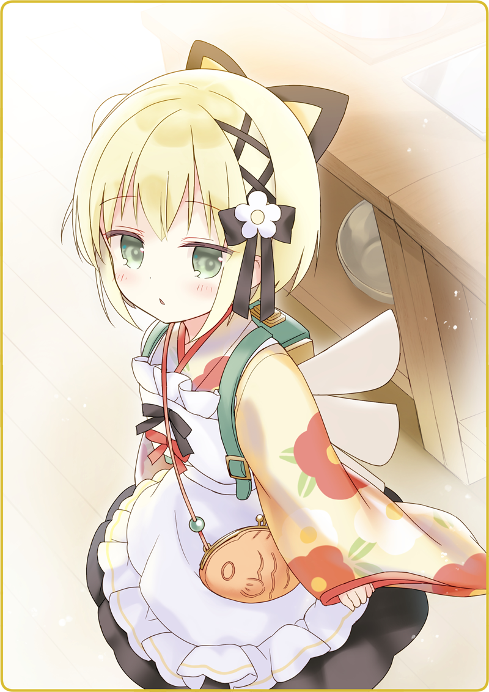

プリマドール・アンコール
01-07 戦闘人形であります（１）
石鹸で入念に手を洗うと、真新しいシャツとエプロンに袖を通す。三角巾で髪を抑えて、姿見の前でチェックする。なかなか様になっている。コック帽でもあればなお良かったけれど、それは贅沢だろう。
上機嫌でいると、背後から声をかけられた。
「あれ……？」
ちらりと後ろを見つめるが、誰の姿も見えない。おかしい、いま確かに聞こえたのに……。

「わっ」
ほとんど真下から声が響いて、思わずぱっと後じさる。
そこには子供のように小さな人形がいた。
檸檬のように鮮やかな黄色の着物。大ぶりの黒いリボンが揺れている。じっとボクを見る大きな瞳。小さな口をじっと結んでおり、表情は読み取れない。
まるで軍人さんのようなぶっきらぼうの口調だ。
そういえば、鴉羽さんはいま３体の人形が働いていると言っていた。灰桜、鴉羽、そして月下。彼女で全員ということだろう。
「案内してくれるんだね、ありがとう……」
小さく頷くと、スタスタと歩いて行く。
背中の背嚢はやや大ぶりで、羽根のような意匠が取り付けられていた。厨房入り口に突っかかりそうだったが、そこは心得ているらしく、くるりと体を横にして通り抜けている。
後に付いていくと、小さいながらも清潔な厨房が現れる。
中央には調理台。壁面には多種多様なフライパンをはじめ調理器具が吊されている。舶来ものだろうガスレンジに、なんと湯沸器まで備え付けている。
「メニューはどんな感じなのかな？」
調理台の引き出しを開けると、月下は一冊のノートを取り出した。
「ありがとう。わ、すごく細かい……」
ページをめくると、万年筆でレシピが書き付けてある。微に入り細を穿つような、丁寧な説明文だ。分かりにくいところには簡単なイラストまで添えられている。これを書いた人はよほど筆まめなのだろう。
「これだけあるとバッチリだよ。腕の振るいがいがあるなぁ」
「というと……それほどでもないってこと？」
厨房の小窓から、フロアを見つめている。
いまは開店前なのでもちろんがらんとしているが、とても席が埋まらないということだろうか。考えてみれば、黒猫亭に来るのは２回目。営業中の様子は確認していない。
「雰囲気もいいし、人形が接客してくれる店なんてないから、流行りそうなものだけど」
「出征していた人はそうかもね」
人形を見ると、辛い記憶を思い出すという人は多いだろう。
「でも、月下たちは戦闘人形じゃないから、それは偏見だよね」
「え？」
さも当然と言うので、改めてその姿を見る。
小さい。初等科３年生ぐらいだろうか。確かに落ち着きはあるけれど、戦闘人形のような威圧感はとても感じられない。
「ああ、いや……そんな風に見えないから」
これで、なにか特技があるのかもしれない。
「目から電撃が出るとか」
「口から光線を放つとか」
「あ、背中の羽根が飛び出てさ、こうブーメランみたいに敵を切り裂いて……」
問答していると、たたたた……と跳ねるような足音が聞こえてきた。
灰桜「月下さん、うささん、大変です！」
髪を揺らしてやってくるのは灰桜だ。
「なにか問題が？」
灰桜「ごみ捨て場が荒らされていますっ！」
「え……」
もしかして……不審者？
ボクたちだけじゃ対応できないかもしれない。
「いや、でも……」
月下をちらりと見つめる。
戦闘人形の月下なら、もしかして……？
執筆：丘野塔也 挿絵：まろやか ＣＶ：富田美憂（月下）
©VISUAL ARTS / Key